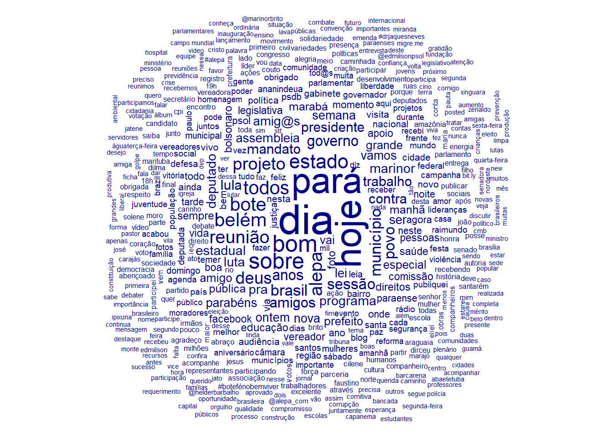
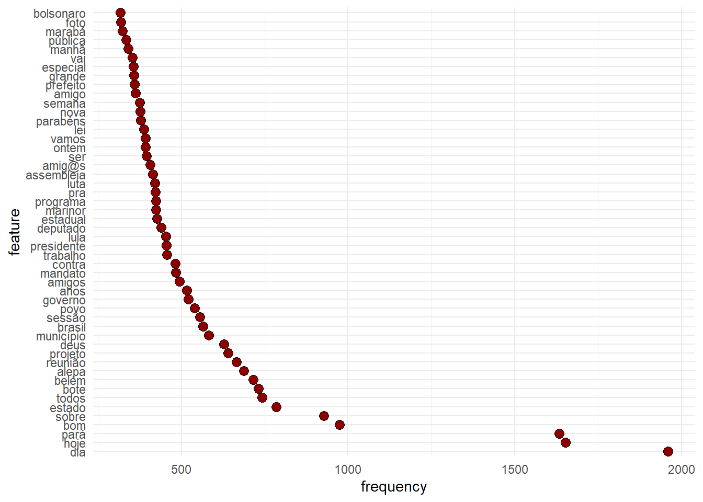
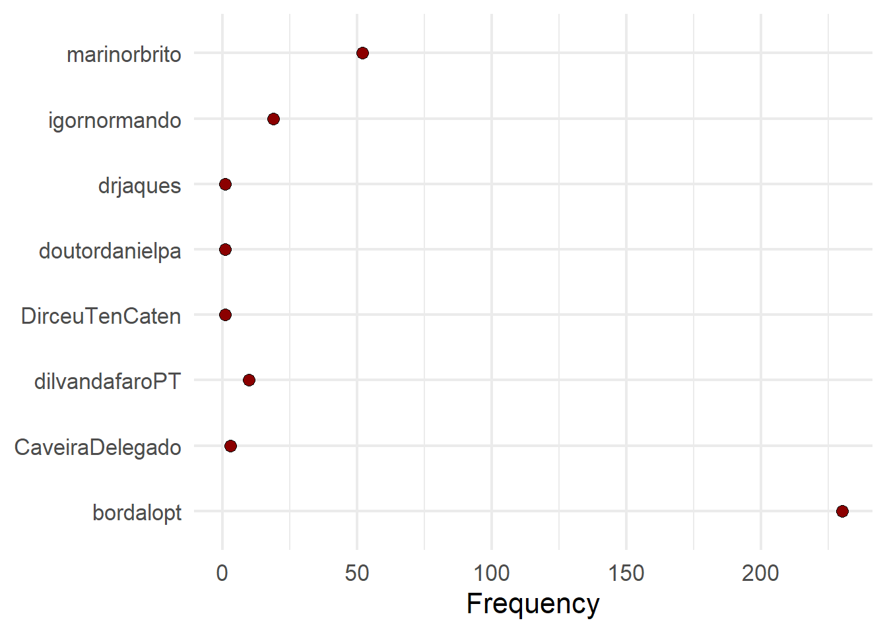
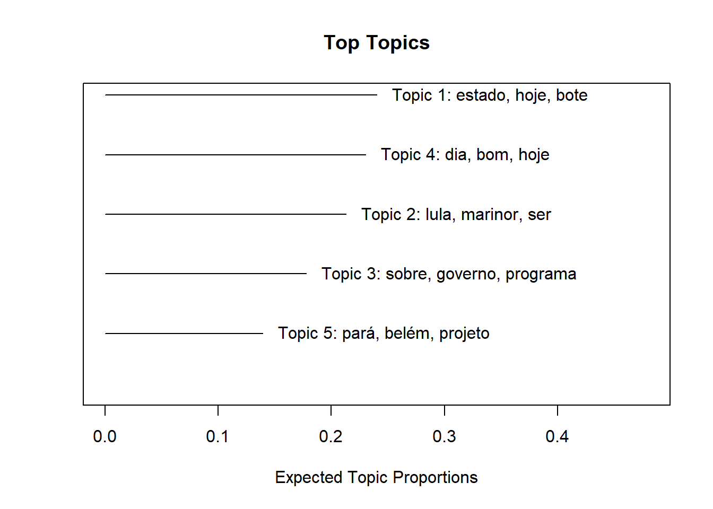

A API do Twitter deve ser uma das mais utilizadas por cientistas sociais. A quantidade de papers usando dados de twitter é incrível. Neste código, vamos aprender a acessar, coletar e analisar dados do Twitter.
O Twitter possui duas APIs, que resultam em duas formas diferentes de coletar dados. A API REST dá acesso à tweets até sete dias atrás, e a Streaming API dá acesso a tweets que estão sendo produzidos no referido momento. O acesso à REST API se dá via endpoint search, enquanto o streaming ocorre via endpoint filter. Todos os pacotes de R que acessam a API do Twitter usam estes dois termos para especificar o tipo de busca.
O primeiro passo é autenticar pegar suas credenciais para acessar as APIs do Twitter. Na aba Preparação para o Workshop há um tutorial de como solicitar suas credenciais. Em geral, o processo pode durar um ou dois dias, a depender das perguntas extras que o Twitter irá enviar por email.
Seguindo todos os passos para solicitar a conta de desenvolvedor, o nome do seu app no site do twitter developer aparecerá no canto direito superior da sua tela. Em seguida, basta seguir o link e acessar as credenciais. Há quatro credenciais diferentes, e a melhor forma de acessá-las é criando um objeto de R com seus nomes.
app_name <- "seu_app_name"
consumer_key <- "seu_consumer_key"
consumer_secret <- "seu_consumer_secret"
access_token <- "seu_acess_token"
access_token_secret <- "seu_token_secret"Para acessar a API, iremos utilizar o pacote rtweet. Há diversos outros pacotes para acessar a API do Twitter. Um outro favorito meu se chama ‘Twarc’ em Python. Escolha o que pacote que vocÊ julgar mais intuitivo para sua dinâmica de trabalho.
# Faça o download do pacote
library(devtools)
install_github("mkearney/rtweet")Em seguida, diga ao pacote quais são suas credenciais
library(rtweet)
create_token(app = app_name, consumer_key = consumer_key, consumer_secret = consumer_secret,
access_token = access_token, access_secret = access_token_secret)<Token>
<oauth_endpoint>
request: https://api.twitter.com/oauth/request_token
authorize: https://api.twitter.com/oauth/authenticate
access: https://api.twitter.com/oauth/access_token
<oauth_app> RetornoBot
key: P9YRPFk4ACqJktsbL8RtyhVNu
secret: <hidden>
<credentials> oauth_token, oauth_token_secret
---bolsonaro_tweets <- search_tweets("Bolsonaro", n = 100, include_rts = FALSE)bolsonaro_tweets <- stream_tweets("Bolsonaro", n = 100, include_rts = FALSE)
bolsonaro_tweets$text[1][1] "BOOM!! Bolsonaro called Greta Thunberg a SNOTTY BRAT & shames the MSM for giving her so much attention!!\n\nThey hate him almost as much as Trump & he couldn't care a less!<U+0001F64C><U+0001F62D><U+0001F62D><U+0001F62D><U+0001F62D><U+0001F62D><U+0001F62D><U+0001F62D><U+0001F62D><U+0001F62D> https://t.co/BQgWPV7bHd"tt <- get_trends("Brazil")
tt$trend[1:10] [1] "Paulo Freire" "#BemVindoLeo" "#fsradiobrasil"
[4] "UFRGS" "Coudet" "#BBDebate"
[7] "#ApologizeToChuu" "#CarburadorDePrata" "SOMOS TODOS THIAGO"
[10] "Maurício Mattar" Vamos acessar as timelines dos deputados do Pará. Usaremos o banco de dados que criamos ontem para isso.
library(tidyverse)
deputados <- read_csv("C:/Users/Tiago Ventura/Dropbox/webscraping_workshop_ufpa/html/dia_01/deputados_para.csv")
# Seleciado os que possuem twitter
deputados_twitter <- deputados %>% filter(!is.na(twitter))
# Vamos extrair somente as tags
names <- str_remove_all(deputados_twitter$twitter, "https://www.twitter.com/|https://twitter.com/")
names [1] "DepAlexSantiago" "bordalopt" "cilenecouto"
[4] "CaveiraDelegado" "dilvandafaroPT" "dilvandafaroPT"
[7] "dirceutencaten" "doutordanielpa" "drjaques"
[10] "elielfaustino10" "igornormando" "marinorbrito"
[13] "depcarmona" "deprsantos" "deputadothiago" Vamos capturar os tweets. Começaremos com o deputado Alex Santiago.
dep1_tweets <- get_timelines(names[1], n = 5)
head(dep1_tweets$text)[1] "A convite da comunidade evangélica dirigida pelo pastor Benedito e missionária Valdenuza, participamos do Culto Especial em homenagem ao dia internacional das mulheres, realizado na Assembléia de Deus, CIADSETA-PA/MT, em Floresta do Araguaia. https://t.co/HAPvVc3gBp"
[2] "Estive em Belém na sede da UEPA - Universidade Estadual do Pará, com o reitor Dr. Rubens Cardoso, juntamente com o reitor do Campus de Redenção Dr. Renato Carr, na oportunidade destacamos a importância da implantação do Campus em Parauapebas! https://t.co/flap8vM7lI"Há um limite de 3.200 tweets por timeline. O que significa que não é possível capturar todas as informações daqueles usuários muito ativos no Twitter. Vamos pegar informações sobre o perfil deste deputado.
dep1_usuarios <- lookup_users(names[1])
dep1_usuarios$screen_name[1] "DepAlexSantiago"Quais tweets o deputado curtiu recentemente?
dep1_favorites <- get_favorites(names[1], n = 5)
dep1_favorites$textNULLQuem o deputado segue?
dep1_seguidores <- get_followers(names[1])
dep1_seguidores# A tibble: 77 x 1
user_id
<chr>
1 1192018480427606016
2 1178495030702592001
3 26397382
4 2379079912
5 837784260593520641
6 1175957802436714496
7 2295381927
8 1093086549825208321
9 3344298503
10 1163997233886482435
# ... with 67 more rowsPor fim, é possível utilizar o rtweet para postar mensagens no Twitter a partir do R. Esta possibilidade tem permitido diversas pesquisas super interessantes usando robôs no twitter em desenhos experimentais. Este artigo de Chris Bail e co-autores, e este artigo de Kevin Munger estão na minha lista de favoritos. Em minha opinião, qualquer aplicação deste tipo daria uma excelente publicação no Brasil.
post_tweet("Eu estou postando esse tweet a
partir do pacote rtweet para
mostrar aos alunos da UFPA
o incrível mundo do R")Para demonstrar possíveis análises com dados de Twitter, vamos praticas com algumas técnicas simples e descritivas de análise computacional de texto usando o pacote de R quanteda. Coletaremos as timelines dos deputados do Pará, utilizando o arquivo de .csv que criamos ontem depois de fazer a raspagem no site da ALEPA.
text <- map(names, ~get_timelines(.x, n = 3000))Vamos agora separar somente com o texto e nome de cada deputado.
# Combinar todos
tweets <- bind_rows(text) %>% select(screen_name, text)
tweets# A tibble: 18,661 x 2
screen_name text
<chr> <chr>
1 DepAlexSantiago A convite da comunidade evangélica dirigida pelo pastor~
2 DepAlexSantiago Estive em Belém na sede da UEPA - Universidade Estadual~
3 bordalopt "A bancada do PT na @Alepa_com apresentou emenda à PEC ~
4 bordalopt Gratidão por um ano incrível. #2019PodcasterWrapped htt~
5 bordalopt A proposta fará que o consumidor tenha mais um instrume~
6 bordalopt "Em celebração ao dia Internacional dos Direitos Humano~
7 bordalopt Inclusão é um direito humano fundamental. https://t.co/~
8 bordalopt "A entrega da medalha Paulo Frota de Direitos Humanos t~
9 bordalopt "A Comissão de Direitos Humanos da Alepa homenageia, ho~
10 bordalopt Um dos homenageados é o grupo Mundo Azul, de mães e pai~
# ... with 18,651 more rowsEm geral, quando fazemos análise de texto, iniciamos criando o corpus de textos que iremos utilizar. O Corpus é somente uma forma mais eficiente de armazenar textos em R
library(quanteda)
library(tidytext)
# Crie um corpus de textos
corpus <- corpus(tweets$text)
docvars(corpus) <- data_frame(deputados = tweets$screen_name)
# Limpe os textos com palavras que importam pouco para a analise Crie uma
# Document-Feature Matrix
palavras <- c("https", "t.co", "http")
dfm <- tokens(corpus, remove_punct = TRUE, remove_numbers = TRUE, remove_symbols = TRUE) %>%
tokens_select(., min_nchar = 3L) %>% tokens_remove(., c(stopwords("pt"),
palavras)) %>% dfm()
summary(dfm) Length Class Mode
706916002 dfm S4 Nós acabamos de criar um objeto chamado Document-Feature Matrix. Esta é a forma mais comum para fazer anáilse de texto. É uma matrix em que nas linhas você tem o documento, e nas colunas as palavras do seu conjunto de textos. Cada entrada é o número de vezes que a palavra aparece na linha. Vamos visualizar nosso texto usando algumas funções do pacote quanteda.
textplot_wordcloud(dfm)
features_dfm <- textstat_frequency(dfm, n = 50)
# Sort by reverse frequency order
features_dfm$feature <- with(features_dfm, reorder(feature, -frequency))
ggplot(features_dfm, aes(x = feature, y = frequency)) + geom_point(shape = 21,
size = 3, fill = "darkred") + theme(axis.text.x = element_text(angle = 90,
hjust = 1)) + theme_minimal() + coord_flip()
# Get frequency grouped by president
freq_grouped <- textstat_frequency(dfm, groups = "deputados")
# Filter the term 'american'
freq_bolsonaro <- subset(freq_grouped, freq_grouped$feature %in% "bolsonaro")
ggplot(freq_bolsonaro, aes(x = group, y = frequency)) + geom_point(shape = 21,
size = 3, fill = "darkred") + xlab(NULL) + ylab("Frequency") + theme(axis.text.x = element_text(angle = 90,
hjust = 1)) + theme_minimal(base_size = 16) + coord_flip()
Agora, vamos entrar um pouco no uso de modelos de machine learning para analisar textos. Este artigo escrito por Justing Grimmer e Brandon Stewart é uma excelente introdução a modelos de análise de texto. Vamos usar aqui um método chamado Tópic Models.
Não entrarei aqui na parte estatística por trás deste modelo. Case se interessem, ler o artigo de Molly Roberts e co-autores. Em resumo, este modelo busca identificar clusters de palavras em cada documento. Não há nenhum input no modelo, o algoritmo basicamente identifica quais palavras costumam aparecer com maior frequência nos mesmos documentos.
# Para estimar os modelos de tópicos, vamos usar o pacote de R `STM`. Este
# pacote exige uma pequena transformação no objeto
library(stm)
dfm_stm <- quanteda::convert(dfm, to = "stm")
model_parag <- stm(dfm_stm$documents, dfm_stm$vocab, K = 5, data = dfm_stm$meta,
init.type = "Spectral", verbose = FALSE)
# Topicos
labelTopics(model_parag)Topic 1 Top Words:
Highest Prob: estado, hoje, bote, pará, reunião, alepa, sessão
FREX: bote, reunião, marabá, legislativa, comissão, paraense, lideranças
Lift: #30m, #acessoasaude, #agenda, #ananindeua, #audienciapublica, #carnabase, #cidadania
Score: bote, reunião, marabá, sessão, legislativa, município, alepa
Topic 2 Top Words:
Highest Prob: lula, marinor, ser, vai, todos, brasil, agora
FREX: lula, ter, moro, porque, vou, deve, nunca
Lift: @jimmynight, acho, antes, cabeça, defender, deixar, dizer
Score: lula, ser, moro, temer, país, amor, ter
Topic 3 Top Words:
Highest Prob: sobre, governo, programa, contra, brasil, vivo, leia
FREX: programa, vivo, blog, rádio, liberdade, senado, variedades
Lift: #botafogo, #boulosnaredetv, #celpa, #chegadeimpunidadebarcarena, #cinema, #códigoflorestal, #cpi
Score: variedades, vivo, sobre, rádio, programa, contra, liberdade
Topic 4 Top Words:
Highest Prob: dia, bom, hoje, deus, todos, amigos, amig@s
FREX: dia, bom, deus, amig@s, boa, noite, feliz
Lift: desejo, #108anos, #14desetembro, #15deoutubro, #2019podcasterwrapped, #25anos, #42anosdevitórias
Score: dia, bom, deus, amig@s, amigos, irmãos, ieq
Topic 5 Top Words:
Highest Prob: pará, belém, projeto, nova, foto, trabalho, facebook
FREX: belém, nova, foto, facebook, publiquei, frente, acabou
Lift: #14jgrevegeral, #1deabril, #bolsonaroday, #democracia, #doutordaniel, #elenunca, #empoderamentofeminino
Score: facebook, publiquei, belém, projeto, foto, pará, publicar # Visualizar
plot(model_parag)
Estes modelos são super úteis quando pesquisadores querem entender de forma mais descritiva as estruturas por trás dos textos. Os resultados aqui não estariam prontos para uma análise porque há diversas coisas ainda para ajustar nos modelos – número de tópicos, coletar mais dados, limpar melhor os textos – porém fica como uma ferramenta para o uso de vocês no futuro.
Colete dados do Twitter sobre um tópico de seu interesse.
Apresente uma análise interessante sobre esses dados. Pode ser uma nuvem de palavra, um gráfico de frequência, fique a vontade.